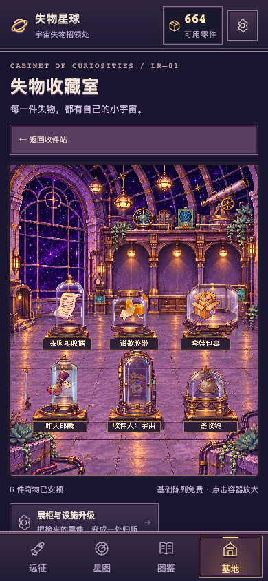
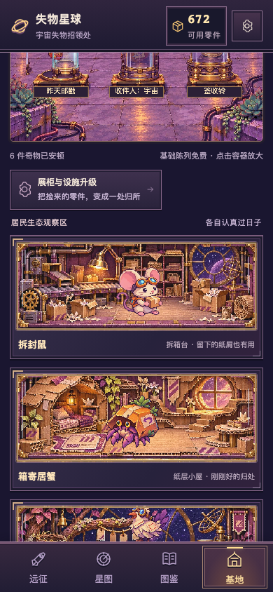
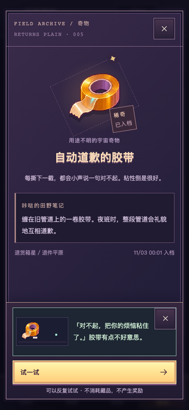
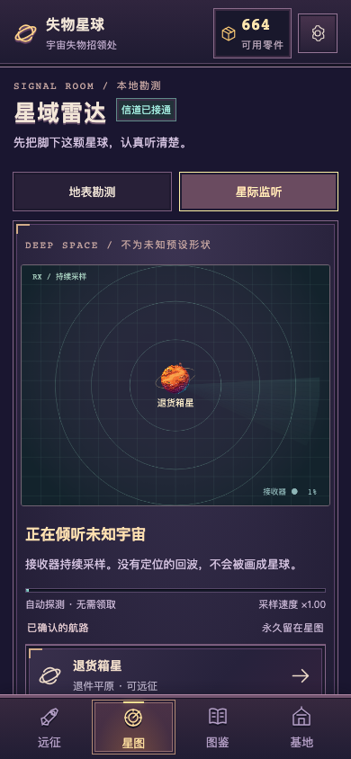
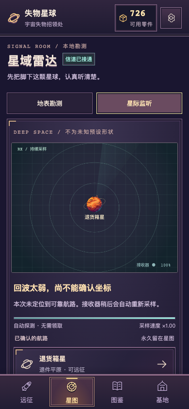
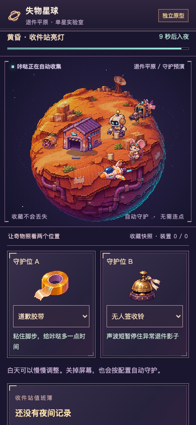
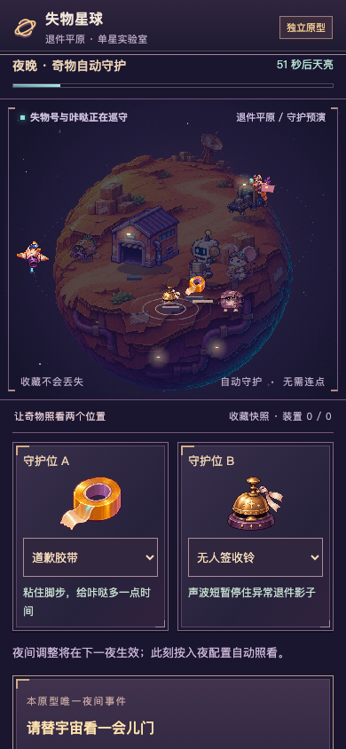
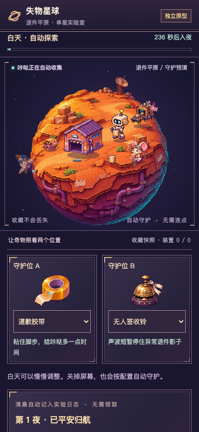
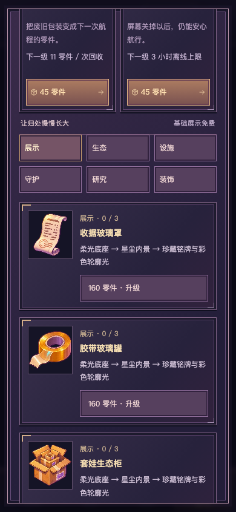
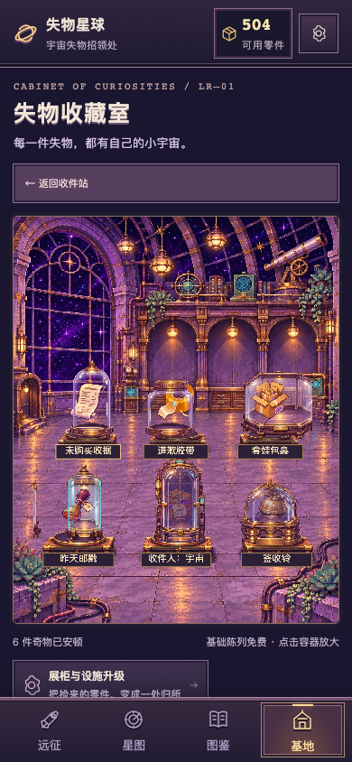

失物星球 · V0.2 实际运行审核
0.2.0 · Git eee74ae · TapTap开发自测424044
这里的390×844截图与连续录像来自桌面浏览器移动触控仿真，不是手机实拍。收藏使用通过引擎生成的完整首星测试快照；录像动画为真实墙钟速度。新版真机仍待用户扫码审核。
完整交付与已知限制 · 经济平衡 · 实际测量JSON · 验证摘要
收藏室：实际玻璃层与居民



持续星际监听


夜间守护 · 可进可退，默认独立



有限成长与真实消费


接入前候选表 · 正式模型复算 · 实际归档子目录往返验证
尚未制作第二星球完整场景；夜守是否加入日常循环、真机亮度与性能、两槽趣味性仍待用户审核。未合并、未正式发布。